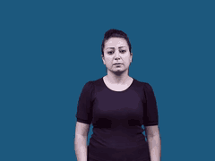

| 1000 Hands الف ايد | |||||||
Sign 7 of 24 · Introductions My name is اسمي Watch it a few times, then copy it with your hands. Say the word as you sign it. | |||||||
QUICK CHECK اختبر نفسك Can you sign these from memory? Try first, then scroll down to check. No لا Thank you شكراً | |||||||
DEAF CULTURE ثقافة الصم Many Deaf people see being Deaf as an identity and a community with its own language, not as something missing. "Deaf" (أصم) is the respectful word. Avoid "deaf and dumb" (أطرش، أبكم) and "hearing-impaired". In Deaf communities, people also have a name sign, usually given to them by a Deaf person. You don't make one up for yourself. | |||||||
| ↓ check yourself ↓ | |||||||
 No · لا | |||||||
 Thank you · شكراً | |||||||
|
Signs from the Dictionary of Jordanian Sign Language (SooSL). Tap a sign to watch the full video. Questions, or want to sign for us? Just reply, or write to liu.thousandhands@gmail.com. Unsubscribe | |||||||